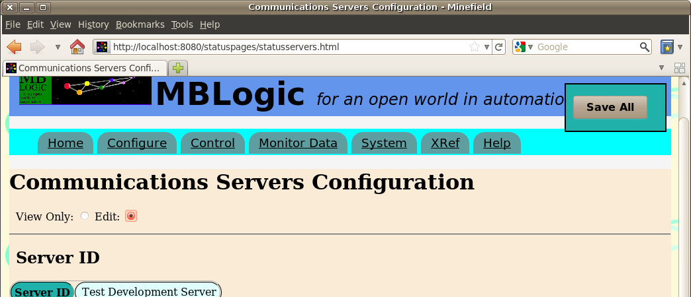
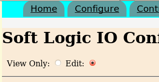
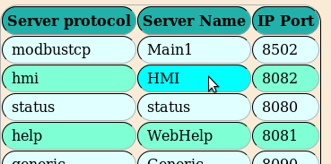
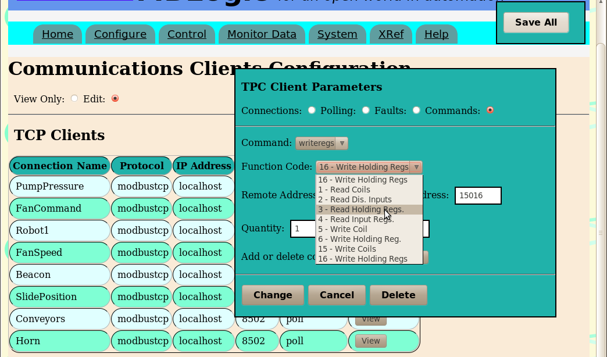
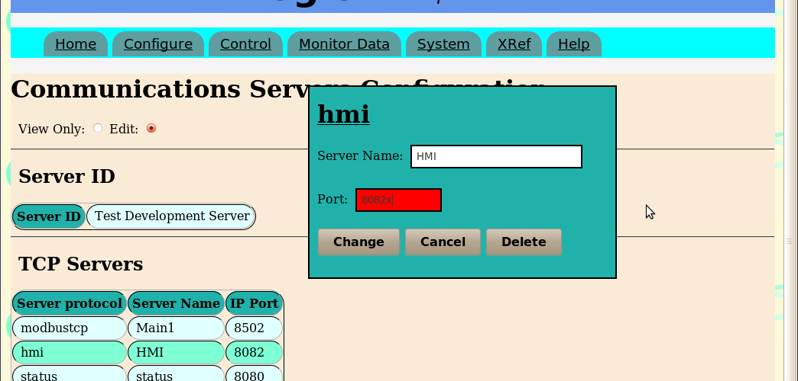
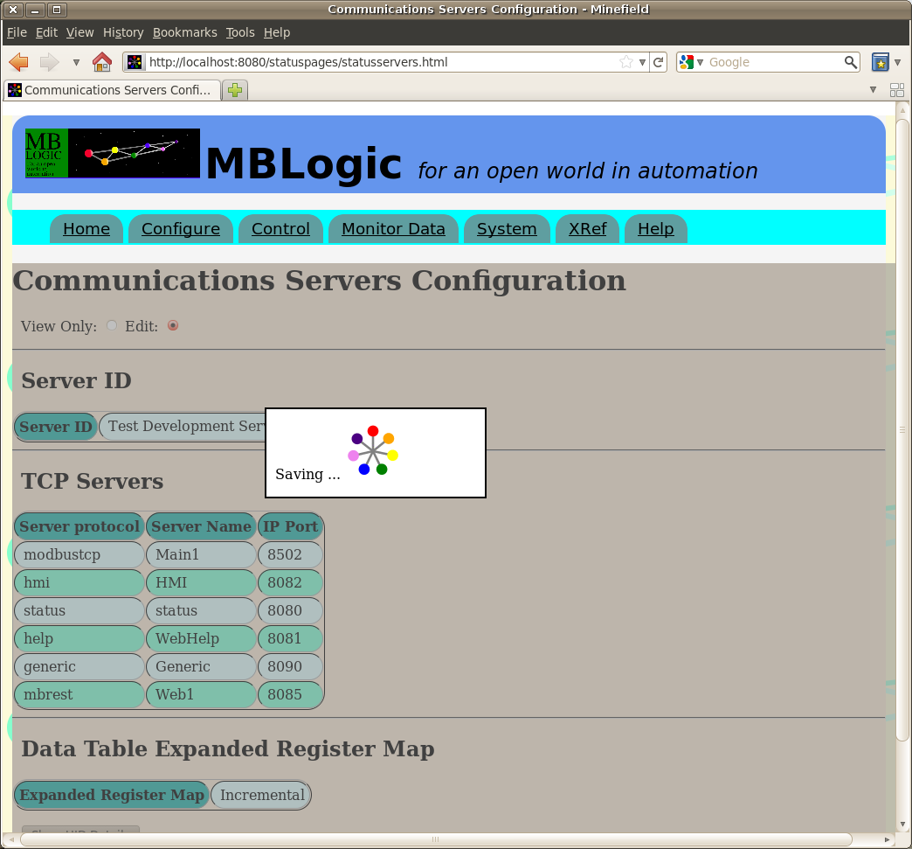
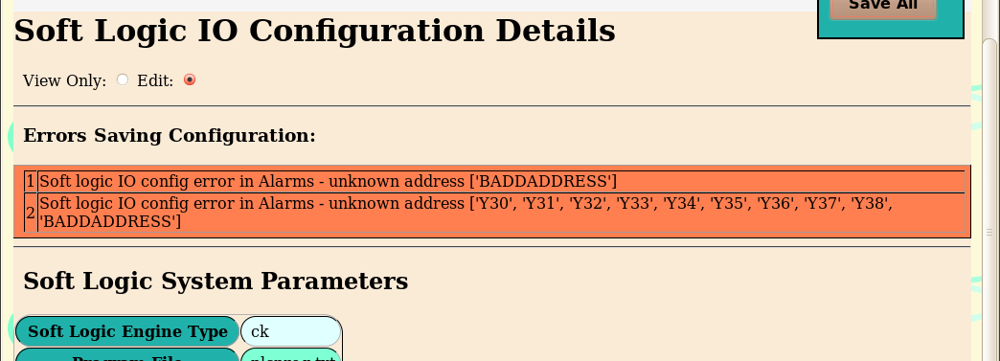

MBLogic
for an open world in automation
MBLogic
for an open world in automation
Help - Edit Configurations
Overview
This section describes how to use the form based editors to create and change system configurations. This allows editing of the following:
- Servers
- Clients
- HMI
- Soft Logic IO
Soft logic programs are not discussed here, but are covered elsewhere in the documentation.
Enabling Editing
When a configuration web page is displayed, it is in "view only" mode. This allows you to view the configuration settings, but not change them. To place the configuration page into edit mode, you select "edit" from the radio button widget near the upper left corner of the page (below the menu bar).


When the page is in edit mode, items which can be edited will change colour as you move your mouse cursor over them. This shows you which items can be edited and which cannot.

Input Forms
Input is entered via forms which become visible when you select an item to enter. The forms contain text and numeric entry boxes, radio buttons, drop down selection lists, etc.

Validating Input
Most inputs are validated immediately when you enter them. An invalid entry in an input fields will cause the background to change colour indicating an error. You will not be able to save the data in the form until all errors are corrected. The validity of data in some fields may depend on the value of the data in other fields.

Saving Data
When you set the web page to "edit" mode, a "save all" button will appear in the upper right corner of the page. This will move if you scroll the page so as to remain always visible.
When you enter data in a form, it is not saved to disk until you press the "save all" button. When you press the "save all" button, it sends the data to the server and requests that it be validated and saved to disk. The "save all" button is disabled while you are editing a form.
When data is sent to the server to be saved a message is briefly displayed to indicate this is taking place. The message is displayed while waiting for the server to acknowledge the save operation, plus a short additional time delay (the time delay was added because without it a save operation would normally happen too quickly for an operator to see the acknowledgement).

Server Validation
When data is sent to the server to be saved, the server will run the same series of checks on it that it uses to validate the data when loading it from disk. The server may find errors that were not detected by the web browser form (e.g. the server knows more about correct address formats).
If an error is found, the data will not be saved. Instead, an error message (or series of messages) will be returned to the web browser indicating what the error was. These errors must be corrected before a save operation can be completed.

When Changes Take Effect
Changes to data will not take effect until they are successfully saved to disk. Changes to the HMI or soft logic IO configuration take effect immediately upon being saved.
Changes to the client or server communications on the other hand do not take effect until the system has undergone a complete restart. If you make a change to the client or server communications but do not perform a system restart, the running configuration will not be the same as the configuration stored in the file(s) on disk. If you reload the display form, the current configuration will be shown which may not reflect those changes. When you make a change to the client or server configuration, you should follow it with a system restart.